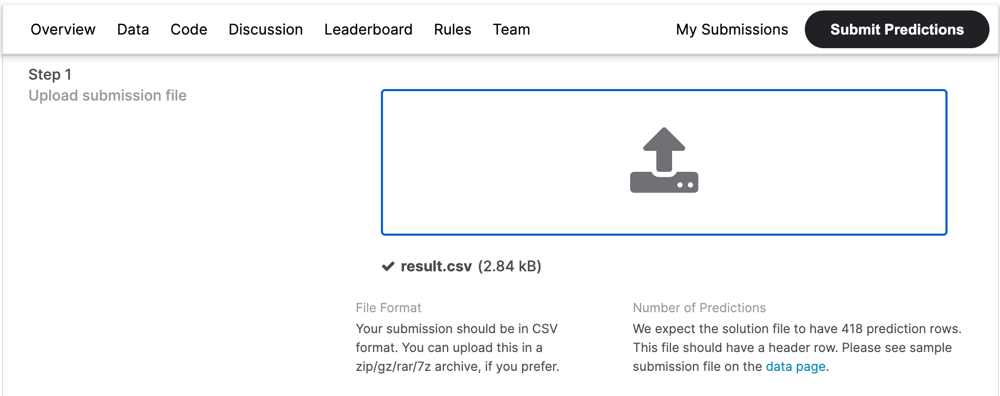
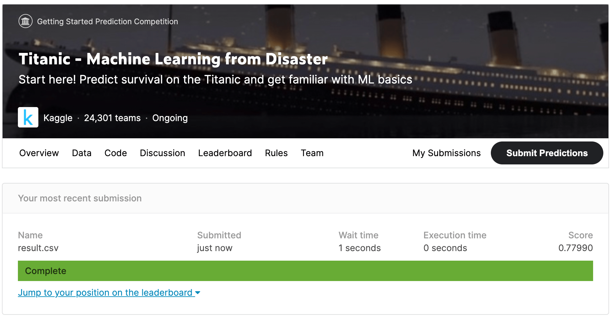

Kaggle に挑戦#
Kaggleを用いて、 より実践的にデータサイエンス＆機械学習を学び、練習する方法を紹介します。
Kaggle と入門者向けコースウェア
import numpy as np
import pandas as pd
import matplotlib.pyplot as plt
import seaborn as sns
try:
import japanize_matplotlib #matplotlibの日本語化
except ModuleNotFoundError:
!pip install japanize_matplotlib
import japanize_matplotlib
sns.set(font="IPAexGothic") #日本語フォント設定
Kaggle#
Kaggleは、世界中のデータサイエンス・機械学習を学んでいる人、仕事で活用している人が、40万人以上集まるコミニティです。 Kaggleでは、企業や政府などの組織とデータサイエンティストを繋げるコンペ形式のプラットフォームとなっています。
Competition（コンペ）
企業や政府がコンペ形式（競争形式）で課題を提示し、賞金と引き換えに最も制度の高い分析モデルを買い取るクラウドファンディングに近い仕組みになっています。
各コンペの利用規約へ同意をすると、データセットのダウロードが可能となります。 データセットを落として、自分でデータ分析を行い、最適な予測モデルを作ることができます。
また、過去のコンペのデータを利用して、練習することも可能になっています。 また、データサイエンスのエキスパートが書いたコードも参考にみることができるので、 非常に勉強になります。
タイタニック号の生存者予測#
有名なタイタニック号の生存者予測の問題に挑戦してみましょう。

Kaggleの利用にはアカウント登録(無料)が必要となります。 データサイエンスをさらに深めて勉強するためには、会員登録しておきましょう。
次のふたつのファイルを入手します。
train.csv: 訓練データtest.csv: テストデータ
英語について
コンピュータ系の最新技術や話題は全て海外からきます。 英語が苦手であってもなくても、ここから先は英語で書かれた情報を読み取るしかありません。
Pandas を用いて、データの確認をしましょう。
train = pd.read_csv("train.csv")
test = pd.read_csv("test.csv")
print('訓練データの次元', train.shape)
print('テストデータの次元', test.shape)
訓練データとテストデータが最初から別々になって提供されます。 コンペなので、テストデータの正解はわからない ようになっています。 つまり、訓練データでモデルを作成し、テストデータで高い正解率を競うことになります。
訓練データとテストデータの内容を比較してみると、
訓練データにはSurvivedのカラムがありますが、テストデータにはありません。
つまり、このSurvivedを目的変数として予測するモデルを作ることになります。
データの把握#
まず、タイタニック号の乗客者名簿の属性をチェックしておきましょう。
PassengerId: 乗客識別ユニークIDSurvived: 生存フラグ（0=死亡、1=生存）Pclass: チケットクラス 1 上層クラス（お金持ち） 2 中級クラス（一般階級） 3 下層クラス（労働階級）Name: 乗客の名前Sex: 性別（male=男性、female＝女性）Age: 年齢SibSp: タイタニックに同乗している兄弟/配偶者の数parch: タイタニックに同乗している親/子供の数ticket: チケット番号fare: 料金cabin: 客室番号Embarked: 出港地 C = Cherbourg Q = Queenstown S = Southampton
予測モデルの作成#
予測モデルの作成は、今まで習ってきた通りです。
- データの前処理 データ分析しやすいように準備する
- 機械学習アルゴリズム(モデル）を選ぶ
- 説明変数を選ぶ
- 学習＆評価する
これ以外にも様々な工夫があります。 タイタニック号の生存者予測は、Kaggleの入門題材として色々な解説があります。 それらを参考にしながら、ぜひ予測モデルを構築してください。
コンペへの提出方法#
さて、無事に予測モデルが開発できたとして、コンペへの提出方法を説明します。
コンペのページの「Submit Predictions」を開いて、 そこの指示にしたがって提出します。

提出方法は、コンペごとに異なりますので、詳細は説明を読んでください。 ここは、タイタニック号の生存者予測(Kaggle) の場合を説明します。
まず、学習した予測モデル(model)から、
テストデータの予測を行います。
提出は、テストデータの予測値を指定されたCSVファイルとして出力します。
ここで必要になるのは、
PassengerIdと予測されたSurvivedのふたつのカラムからなる表データです。
データフレームを作って、result.csvに保存します。
import numpy as np
df = pd.DataFrame({'PassengerId': test['PassengerId'], 'Survived': y_pred})
df.to_csv("result.csv", index=False)
これで、result.csvができました。
一応、result.csvのファイル形式を確認して、正しく保存されているかみておきましょう。
予測値なので..
Survived のカラムの値は、作成した予測モデルに依存します。完全に一致する必要はありません。
あとは、Colabからresult.csvをダウンロードして、Kaggleに提出します。
しばし待つと、スコア（正解率）が表示されます。

Let's try
自分の予測モデルを作って、僕のスコア（正解率）0.77990を超えてみよう。
練習#
Kaggle にユーザ登録をして、 タイタニック号の生存者予測(Kaggle)のコンペに挑戦してみよう。 ただし、コンペ自体は終了しているので、練習用の過去もコンペとなります。 Submitした後の正解スコアを報告してください。
初心者向けのヒント#
ちょっと少しモデル作りに関するヒントを紹介しておきます。
欠損値を処理する#
実際のデータ分析では、100%データセットが揃っていることはほとんどありません。 どこかの属性が一部欠けていたり、信用性が低くて使えないことがあります。 タイタニック号の乗客名簿は、何か嫌がらせかと思うほど、データが欠損しています。
訓練データの欠損値
Note
ポイント：
この欠損した値をどう解釈し、予測モデルの構築に生かしていくのか？
実は、数多くあるKaggleのコンペの中から「タイタニック号の生存者予測」を選んだのは、 色々な人が解説をかいていて参考にする情報がWebに多く存在するからです。 それらを参考にしながら、よい方法（仮説）を考えてみてください。
説明変数#
カテゴリデータは、数値データに変換することで、説明変数として利用できるようになります。 例えば、性別は次のように0, 1に変換してみます。
train["Sex"] = train["Sex"].map({"male": 0, "female": 1})
test["Sex"] = test["Sex"].map({"male": 0, "female": 1})
X_train = train[["Pclass", "Sex", "Fare"]]
y_train = train["Survived"]
X_test = test[["Pclass", "Sex", "Fare"]]
アルゴリズムを選ぶ#
機械学習アルゴリズムを選びます。 今回は、２クラス分類問題なので、分類器(Classifier)の中から選びます。
機械学習アルゴリズムは、データの正室に対して、得意/不得意があります。 しかし、最初のうちは全くわからないので、色々試してみた方がよいでしょう。
ここでは、決定木を表示したかったので、DecisionTreeClassifierを使ってみました。
from sklearn.tree import DecisionTreeClassifier,plot_tree
model = DecisionTreeClassifier(max_depth=3)
model.fit(X_train, y_train)
Warning
訓練データに欠損値があると：
ValueError: Input contains NaN, infinity or a value too largeのようなエラーが発生します。
データの前処理でしっかりと、取り除きましょう。
さて、決定木のいいところは、どういう過程で分類されているか、見える化しやすいところです。
plt.figure(figsize=(15,10))
plot_tree(model,feature_names=X_train.columns,filled=True, rounded=True, proportion=True)
plt.show()
提出データの作成#
テストデータから予測値を求めて、提出データファイルを作成しましょう。
# Fare の前処理を忘れないで
# X_test["Fare"].fillna(X_test["Fare"].mean(), inplace=True)
y_pred = model.predict(X_test)
Warning
テストデータに欠損値があると：
ValueError: Input contains NaN, infinity or a value too largeのようなエラーが発生します。
データの前処理でしっかりと、取り除きましょう。
Pandasを使って表データに変換し、CSVファイルを出力します。
Warning
予測結果なので..
Survived のカラムの値は、作成した予測モデルに依存します。
一致する必要はありません。
指定されたCSVファイルができたら、ファイルを提出します。 しばし待つと、スコア（正解率）が表示されます。

過学習を防ぐには#
データ分析の準備#
次回からPandas を用いて、より本格的なデータ分析を始めます。
欠損値のチェック#
世の中のデータは、データ値が欠けていることがあります。
今回の練習データでは、NaNと表示されている値が、欠損値になります。
データ件数が少ない場合は、目視でみつかる場合がありますが、
データ件数が多くなると、手作業で探すのは無理です。
欠損値をチェックすることが必要になります。
欠損値が見つかったときは、 欠損値を処理するアプローチとしては：
dropna()：データが欠損している行や列を削除するfillna()：データが欠損している要素を別の値で穴埋めする
どのように処理するかは、データ分析の目的によって異なります。 今回は、メンバーを消してしまったら、大変なことになりますので、 __欠損値の値を平均値で補完する__ことで対応してみます。
Note
欠損値の補完
データ分析では、欠損値は何かの嫌がらせかと思うほど、頻繁に生じます。 色々な補完方法がありますので、適切な方法を選んでください。
data['体重'].fillna(50.0) # 体重の欠損値を50.0で穴埋め
data['体重'].fillna(data['体重'].mean()) # 体重の欠損値を体重の平均値で穴埋め
data['体重'].fillna(data['体重'].median()) # 体重の欠損値を体重の中央値で穴埋め
data['体重'].fillna(data['体重'].mode()) # 体重の欠損値を体重の最頻値で穴埋め
コースワーク#
どちらかにアカウント登録して、コンペに参加してみよう。